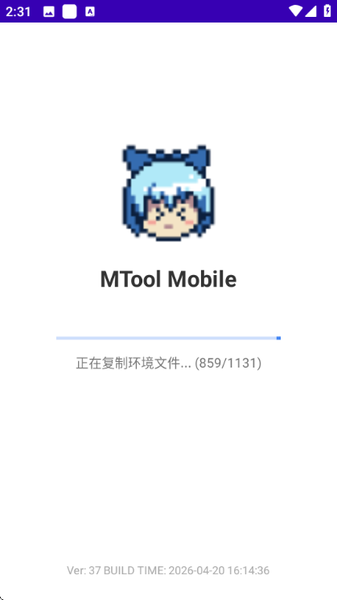
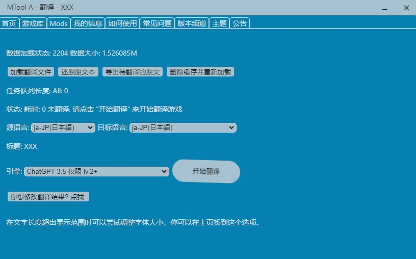

MTool 用了快一年，那些当初没注意到的好和不好
从 2025 年初装到现在，MTool 从"能跑就行"变成了日常离不开的翻译利器。长期使用下来，顺手的地方越来越顺，烦人的地方也慢慢暴露。这篇聊聊一个老用户的真实感受。
装 MTool 的契机很简单——想在安卓手机上玩 Galgame，又不想对着屏幕啃生肉。当时搜了一圈，MTool 在同人圈口碑响，它的mtool官网也做得挺清楚，支持的引擎面广，没多犹豫就从mtool下载拿了包装上了。从 2025 年初到现在快一年，从最初的"能跑就行"到现在每天离不开，这中间的变化挺有意思，值得单独聊一聊。
越用越顺手的那些地方
刚上手时最让我头疼的是引擎支持。Ren'Py 的插件包三百多兆，第一次下的时候差点以为下错了。装完才明白——视觉小说动辄几百万字，把运行时整体搬进手机其实是性能上的务实选择，不是开发商想占存储空间。现在插件管理熟了，主应用里一键更新、按需下载，这套流程跑下来已经条件反射，不再觉得重。
翻译流程的缓存机制也是后来才发现的好。第一次翻长篇 Galgame 时中途断了网，当时差点崩溃——三千万字的 Level.1 额度，从头重来不敢想。结果重试翻译后发现已完成的批次本地有缓存，续上就行。这一条直接改变了我的使用习惯：现在翻大文本前一定会确认网络稳，但断了也不慌，缓存兜着。
虚拟按键的配置逻辑也是越用越觉得合理。当初第一次在手机上玩 RPG Maker 游戏，裸跑根本玩不了——没键盘没鼠标，方向键和确认键全靠点屏幕上的空白区域。MTool 的虚拟按键让我可以把触屏区域自定义映射成键盘键位：移动方向键放屏幕边缘拇指热区，确认键放旁边，菜单键扔角落。打一场战斗调一次，现在每部游戏都有一套自己的按键配置，手感比通用模拟器的映射层舒服多了。

越用越烦的那些地方
有几处是当初没注意，用久了慢慢暴露的问题。
订阅引擎的延迟。付费引擎订阅完，工具里灰的状态要等 1~10 分钟才刷新，官方明说的但第一次遇到还是会慌——以为付了个寂寞。后来习惯了，等不到就重启工具看引擎列表，基本能解决。但这个体验确实不够丝滑，每次都要经历一段"我到底付上了没有"的焦虑。
冷门引擎的支持覆盖不均。主流 RPG Maker 和 Ren'Py 当然没问题，但 SRPG Studio、SMILE GAME BUILDER 这些就考验运气了。战棋类的 SRPG Studio 我试过一次，文本框普遍比 RPG 紧，调了字体才看得清。Pixel Game Maker MV 的动作游戏文本倒是少，但"能不能跑"本身就是个问题。官方支持列表在持续扩充，但小众引擎的用户群体太小，优先级自然低。我现在的策略是冷门引擎的游戏先翻一小段验证全链路——挂接、翻译、显示都正常再投入整本，别白忙活。
译文乱码的排查成本。碰到过几次译文是乱码方块的情况，不是翻译错了，是游戏字体不含对应汉字字形。排查顺序是：调字号确认不是排版问题 → 检查游戏自身字体设置 → 去社区搜这款游戏名看有没有现成修正包。前两步自己能搞定，第三步就看社区活跃度了。这个问题不常见但一旦碰上就恶心，不像引擎不支持那样有明确的绕行方案。
哪个功能成了每天离不开的
译文修改入口。翻译引擎不是神，专有名词、特定玩法的术语经常翻得驴唇不对马嘴。早期遇到这种情况会用"还原原文本"重来，现在直接在译文修改里改个别词就行——改完即时生效，不用重翻整段。这个入口的存在感之低，以至于前三个月我完全没注意到它的存在，后来偶然点进去才发现，瞬间省了无数返工时间。
还有那个删除缓存并重新加载的按钮，名字听着像个危险操作，但实际上是我用得最多的"兜底键"之一。译文数据错乱、引擎识别挂了、插件更新后状态不对——当其他方法都试过没用时，删缓存重加载是最后的安全网。代价是重翻，但珍视的译文可以先备份再操作，不至于全丢。
哪个碰都没再碰过
远程游玩这个功能，一开始觉得酷——手机上跑游戏，电脑键鼠远程操作。实际用过两三次就没再碰了。理由很朴素：虚拟按键调好之后，触屏上玩已经够用了，远程还要开电脑、连连接码，折腾成本远大于收益。它有它的场景，但对我这种日常通勤碎片时间玩两盘的人来说，虚拟按键才是主力。
还有那个离线翻译的文档看了三遍，但从没真正用过。Level.1 的单次翻译文本上限 100M，一般游戏远够不到，在线翻译的稳定性对我来说也够用。离线翻译的价值主要在网络环境差的场景，我恰好不在那个场景里。
观感修正：时间让它显出什么样
当初装 MTool 时的判断是"这是个翻译工具"，用了一年后修正了——它其实是个运行时容器。翻译只是最显眼的功能，插件管理、引擎适配、虚拟按键、远程游玩，这些东西才是让它从"翻译软件"变成"手机上玩 Galgame 的完整方案"的关键。我当初严重低估了这些外围组件的重要性——后来去mtool文档翻了一遍才弄清各组件的分工，现在反过来，没有虚拟按键我根本不想在手机上碰 RPG Maker 游戏。
还有一个反直觉的发现：免费引擎比付费引擎更省心。付费引擎的翻译质量确实更好，但订阅延迟、额度上限、引擎等级不够导致选不了这些问题，让我在非长篇场景下反而优先用免费引擎。不是付不起那个钱，是免费引擎的确定性更高——拿过来就能用，不用等刷新，不用担心额度用尽。这大概就是为什么官方同时维护免费和付费两条引擎线的原因。

去留结论
MTool 不会卸载。不是完美，但它在这个领域的覆盖广度和深度目前没看到替代品。Ren'Py 插件三百多兆这件事，现在看反而是它务实的证据——宁可牺牲存储空间换性能稳定，而不是做个半吊子让用户天天出问题。
什么信号出现我会换？大概是引擎支持的覆盖停滞太久，或者出现了一个真正能跑通视觉小说翻译全链路的轻量方案。但短期内看不到这种可能性。同人游戏圈的体量决定了，愿意在这个方向上持续投入的团队屈指可数，MTool 是其中最认真的那个之一。
写这篇的时候我也在想，如果当初一开始就把它当成"手机 Galgame 运行方案"而不是"翻译工具"来用，可能会少走一些弯路——插件更新、缓存机制、虚拟按键配置，这些功能早一点摸清，使用体验会好不少。但话说回来，哪个工具不是用久了才真正懂它呢。如果你也在整理相关资料，GitHub、Gitee、GitCode 三处都有同步，国内访问也不卡。